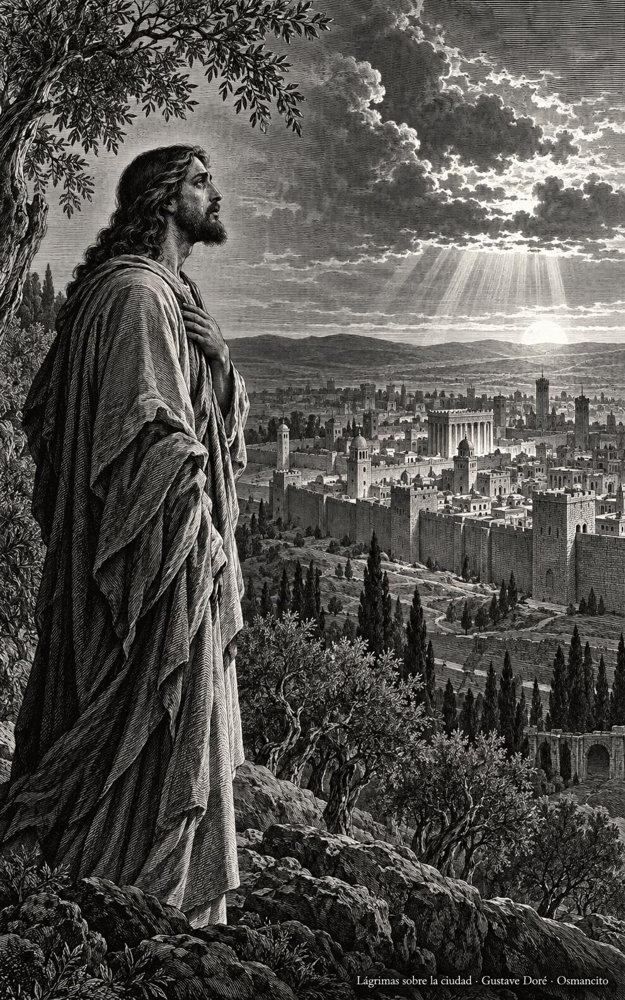
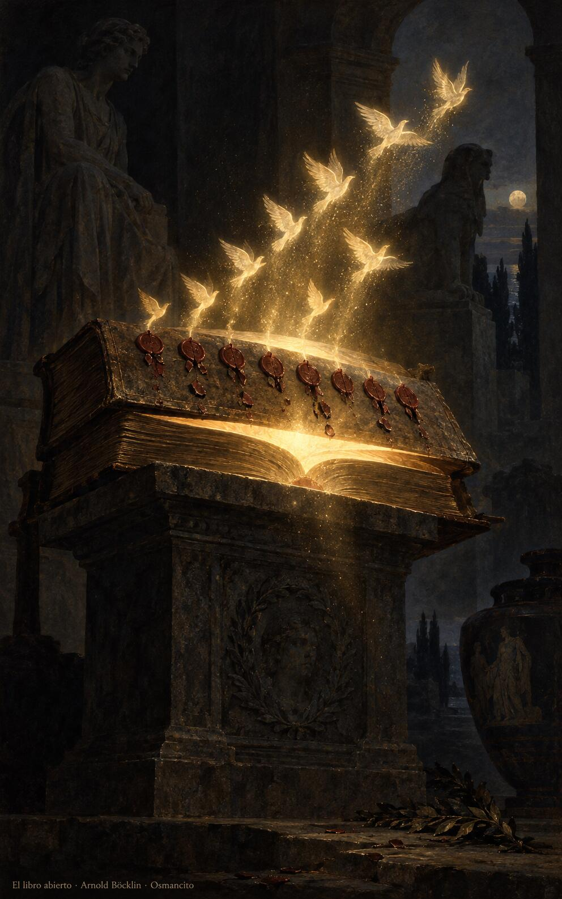

19 de noviembre de 2026
¡Buenos días!
Reconocer la visita
40
Ya no llores, porque ha vencido el león de la tribu de Judá.
Apocalipsis 5,5. Fuente
Que no endurezcamos el corazón ni dejemos pasar la hora en que la paz se acerca a nuestra puerta. El libro sellado de nuestra historia ya tiene quien lo abra: el Cordero venció y convierte el llanto en cántico nuevo. Que reconozcamos la visita mientras es tiempo, que lloremos por lo que se pierde y nos alegremos por lo que se salva, y cantemos con arpas y tamboriles la victoria de los humildes y sencillos.

- Jesús contempla Jerusalén desde el monte con el rostro surcado de lágrimas: Lucas 19, el amor que llora por la ciudad que no reconoció su hora.

- Los siete sellos del libro se agrietan y dejan salir luz y pájaros: Apocalipsis 5, la historia cerrada ya tiene quien la abra.
¡Feliz jueves 19 de noviembre!
😊🙋♂
© 2026 Osmancito